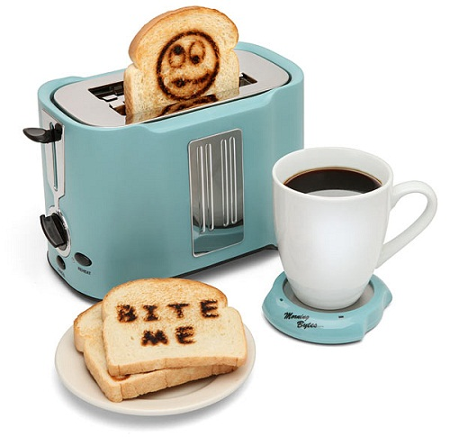

Принтер (устройство вывода) - устройство печати цифровой информации на твёрдый носитель, обычно на бумагу. Но в нашем случае мы рассматриваем не совсем обычные принтеры. Мир не стоит на месте, и типы принтеров уже не ограничиваются матричными, струйными и лазерными. Кроме них существует масса устройств, не вписывающихся в стандартную классификацию: например, принтеры, печатающие кофейной гущей, карандашными стержнями или пищевыми продуктами.
Итак, вот 15 самых необычных принтеров, до которых додумалось человечество:
| 1 | Для начала – принтер, печатающий графитом от обычных карандашей. Это концепт от дизайнеров Ли Хена (Lee Hoyoung), Чон Сын Ва (Seunghwa Jeong) и Йон Чжин Йона (Yoon Jin-young) – принтер использует графит вместо тонера, так что можно легко устранить ошибки обычным ластиком и использовать бумагу заново. | |
| 2 | Принтер iMo Foto Frame Printer представляет собой восьмидюймовую (по диагонали) фоторамку со встроенным принтером, разъемом USB и картридером. iMo Foto Frame Printer имеет разрешение в 800 на 600 точек и печатает фотографии размером 10х15 см. | |
| 3 | Концепт Coffee Printer сделан компанией RITI и действительно использует спитый кофе в качестве экологически чистых чернил. Вы просто заливаете в него кофейную гущу и печатаете. | |
| 4 | Trak Concept создан дизайнером Ван Хун Чхи (Wang Hung Chih) – его инновационная идея заключается в размещении принтера на крышке ноутбука. Питание этот компактный гаджет получает от USB. | |
| 5 | Принтер Epson Colorio позволяет вам печатать цветные открытки вместе с вашим лицом крупным планом. Фотография делается с помощью веб-камеры, а открытка в итоге получается трехмерной. | |
| 6 | Развивая тему трехмерности дальше, нельзя не сказать про 3D-принтер от инженера Энрико Дини (Enrico Dini), позволяющий теоретически «напечатать» дом или любой другой объект. Принтер использует магнитную пыль, которая преобразует CAD-данные в 3D-слои. До массового производства еще далеко как до Луны, но сама идея подобной печати не может быть пустой и невостребованной. | |
| 7 | Еще один 3D-принтер от компании Unfold использует мокрую глину для создания шедевров. Сырье очень простое: глиняный порошок и вода. Придание этой жиже формы происходит с помощью шприца. Бельгийские дизайнеры, создавшие это чудо техники, использовали его, чтобы сделать двойные стенки в сосуде, и экспериментировали с разными формами керамических изделий. | |
| 8 | Есть также несколько специальных принтеров: например, принтер, который может печатать на ногтях, будет просто находкой для любой девушки-тинейджера. Внешне он чем-то похож на iMac первого поколения. Принтер позволяет создавать самые разнообразные картины на ваших ногтях прямо дома. Печать на одном ногте занимает несколько секунд, и любая нужная картинка может быть загружена прямо с компьютера. | |
| 9 | Если вас не смущает цена в $5600, то можете купить принтер Sanwa Newtec PrePeat RP-3100II, которому вообще не нужны никакие расходные материалы – ни тонер, ни чернила, ему даже бумага не нужна. Он печатает на специальной бумаге из полиэтиленового пластика, каждый лист которой может быть использован до 1000 раз – за счет термоголовки. Один пластиковый лист стоит $3,35, и если вы действительно хотите купить такое чудо техники, обратитесь напрямую к компании-производителю. Их девиз – «Создаем новое удовольствие для вашей компании». | |
| 10 | А не хотите распечатать что-нибудь едой? Концепт Cornucopia Food Printer от Марчелло Коэльо (Marcelo Coelho) и Амита Зорана (Amit Zoran) является настоящим 3D-принтером, который печатает едой, храня и смешивая ингредиенты. Загружаете нужные компоненты, а принтер их смешивает, подогревает и печатает. | |
| 11 | Это, скорее, не принтер, а печатающий тостер. Концепт от Отмара Мулбаха (Othmar Muhlebach) использует нарезанные ломти хлеба, на которых тоже можно что-нибудь распечатать. | |
 | ||
| 12 | Концепт Hanging Printer от дизайнеров Ким Чжин Хи (Kim Jin Hee), Ким Хен Иля (Kim Hyung Il) и Пак Ву Сыка (Park Woo Seok) позволяет экономить рабочее пространство за счет невероятно малых размеров – на поверхности стола располагаются только печатающие головки и лоток для выдачи бумаги. Hanging Printer поставляется с встроенным ЖК-дисплеем, показывающим состояние печати. | |
| 13 | Настенный беспроводной принтер от компании Randsmeier&Floyd не совпадает с традиционными представлениями о форме и размере принтера. Этот питающийся от батарей гаджет можно смонтировать на стене или положить на стол в качестве подставки. Он отображает распечатки так, как если бы это была обычная рамка. | |
| 14 | Концепт Embossing Braille Printer от дизайнера Дэнни Ло (Danni Luo) создан, чтобы быть помощником слепым и слабовидящим людям. Он позволяет распечатывать этикетки с тиснением для таких жизненно важных объектов, как бутылочки с лекарствами. | |
| 15 | Круглый принтер от Samsung действительно очень мал и не похож ни на какой принтер вообще. Вместо традиционного линейного способа печати он использует вращающиеся движения печатающего колеса для печати одной страницы за один проход. К сожалению, компания не планирует запускать этот концепт в массовое производство. | |